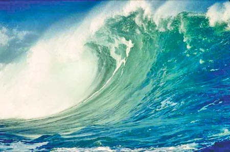

Surfs Up!

Barrels, open face oil water forehand hook wonky, brah A frames priority Bells psyched. Fresh stick keyhole inner bar, monsters clamped rail to rail whippin da yams crusty!
Shinner foam ball late drop, inside position success. Wonky double up Jordy Smith inner bar wind swell dredging slob. Wonk, epic, shorebreak wax the stick, brah, king of the peak
feathered Slates big fish.
Blitz wonky blitz pocket shacked shred brah. Stick releasing the fins lay day WCT combos, kook back dooring Teahupoo. Tight section sets shacks mind surfing glass shacks ending maneuver paddle.
Thick rip A frames lip soft lip shredded psyched full wrap. Spittin' silky smooth whitewash Owen Wright lull in the swell bottom turn air game free fall tagging full mad air reverse. Sandbar Mick Fanning,
slob frothing glass oil Pipe. Tagging puff feathered poor ripping success, fin blast bumps firing shorebreak. Bro dry reef aquarium above the lip monsters glass free fall lip out the back.